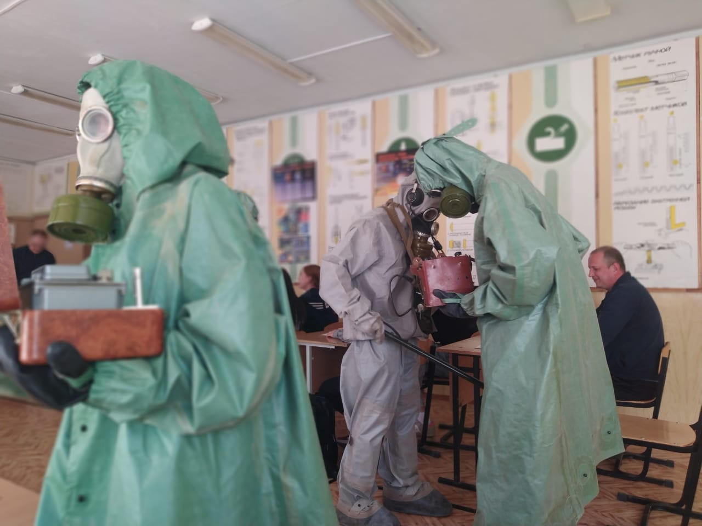
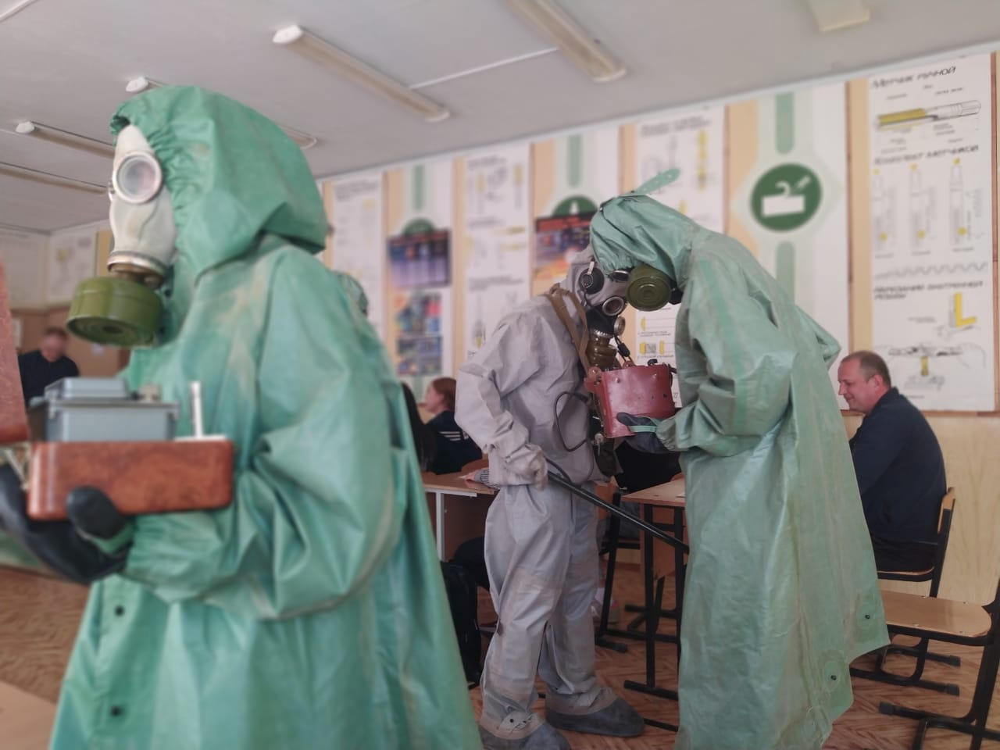

Интегрированный урок физики и ОБЖ
21 апреля 2023 г. в колледже на пр. Шабулина преподавателем физики Пылаевой О.Н. и преподавателем ОБЖ Ларюшиным И.М. был проведён открытый интегрированный урок физики и ОБЖ со студентами учебной группы № 88. Тема урока: «Радиация и способы защиты от ее воздействия». В ходе урока студенты отгадали кроссворд и выяснили что же такое радиоактивность, как, когда и кем было совершено это открытие. Ребята прошли физический лабиринт, зарисовали схему «Виды радиоактивных излучений» и подсчитали индивидуальную годовую дозу радиоактивного облучения. Вспомнили 26 апреля 1986 года – день, когда произошла самая страшная ядерная катастрофа в истории человечества, а также 6 и 9 августа 1945 года — атомные бомбардировки Хиросимы и Нагасаки. Во всех этих и других чрезвычайных ситуациях для спасения людей, сохранения их жизни, здоровья и дееспособности в возможно короткие сроки должны проводиться мероприятия защиты: медицинскими и техническими средствами. Учащиеся изучили содержания и способ применения препаратов в аптечке индивидуальной АИ-4, потренировались в одевании противогаза, и других средств индивидуальной защиты. Во второй части занятия студенты узнали, как и чем измеряется радиация, рассмотрели приборы радиационной разведки и дозиметрического контроля (рентгенметры, индивидуальные дозиметры ДП-24) и выяснили как ими пользоваться. Все учащиеся научились применять теоретические знания в практической жизни, в конкретных жизненных, профессиональных и научных ситуациях.

 
